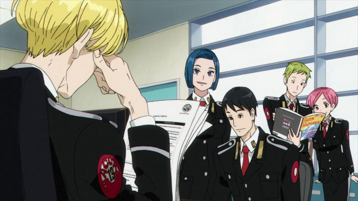

The 2017 anime series "ACCA - 13-Territory Inspection Dept" is... a spy thriller? Or mystery? It isn't like most other mystery thrillers you'd find in anime. Instead, it feels much more like a live-action BBC drama from England. Specfically, a dry, dull story of bureaucrats and political intrigue. Less "James Bond" or "Sherlock Holmes," and more "Tinker Tailor Soilder Spy." It's a rare genre, and on paper, intellitectual viewers might be interested. However, as much as I like a complex story, I personally find shows in this genre vary, and at worst, can be painfully boring. "ACCA" has a lot of good points to it, but I can say with certainty that no one I know would enjoy sitting through it. I can't remember ever seeing an anime as dry as this one.The setting is an alternate modern world, in the Kingdom of Dowa, made up of 13 autonomous countries. For several decades, the Kingdom has only known peace, enough so for ACCA, the Kingdom's inspection department to sniff out misuse or corruption in the government branches, to seem unnecessary. In the first episode, rumors say ACCA will be disbanded. Lead character Jean Otus, ever cool, passive, and indifferent, proceeds to carry out an audit despite his job as risk, and finds a discrepency that uncovers a minor issue, quickly fixed. Justifying ACCA's purpose, the team remains, and Jean is given a busy assignment: to carry out audits on all 13 districts in six months. "ACCA" is a show of character motivation, and metaphors. Jean himself is a mystery for most of the show. He's clearly more clever than he'd let on, but complains about working too hard, excessive travel and low pay. Bags under his eyes suggest he's constantly tired, or simply disinterested, despite carrying out his role well. Always keeping cigarettes on hand, he has a reputation, known as the "cigarette peddler," offering one to associates to get on their good side, and receiving disgruntled looks from others, in a world where tobacco has grown scarce and subject to high taxes. In early line makes it clear: the cigarette case is a "prop," not just a bad habbit. Jean is the embodiment of "cool without trying," and was charming and mysterious enough for me to keep watching just to learn more about him, regardless of the world he inhabits.But the world is diverse too, with each of the 13 countries having their own cultures and lifestyles. It's not hard to see how each of the 13 countries loosely resemble a real-world country from modern-day. Jean's work requires a lot of travel, and we get a glimpse at each location. Behind the scenes, there's scheming for promotion and power, backstabbing, secret agents, and hints of a larger scheme beyond simply skimming a few dollars or leaking private information. The show is dialogue heavy, and both lines and events give clues and meaphors aplenty. One early one is Jean's local city, where fires seem to occur too often due to arson, and where people have grown used to it. As they say, "where there's smoke, there's fire." Unfortunately, "ACCA" is a dull slog. Aside from Jean, most of the show's characters aren't particularly interesting, with many of Jean's co-workers busy stuffing their faces with foreign desserts, and other associates pining for Jean's pretty sister, whom he runs an apartment building with. For the first several episodes, we haven't a slightest clue exactly what's going on in the background, requiring the viewer to be patient for the other show to drop, and to pay close attention as Jean travels from place to place, letting each branch introduce themselves and the logistics behind their office.  It isn't until about halfway through the series that the story shows its cards. Finally, multiple twists and revelations make the intrigue and mystery's payoff feel worthwhile, complete with a satisfying ending. At this point, it's much easier to pay attention, but you're still forced to watch a lot of talking heads with a lack of action, if you want to get the most out of it. Most people wouldn't watch past the first one or two episodes, unless they like pretty men and women in suits.In fact, that's easily the biggest draw. The character designs and story are from Natsume Ono, an artist with a distinct style. He's no stranger to having works adapted into anime, and has earned an audience for featuring older, cool, well-dressed and well-mannered men, all with half-open eyelids to make them seem even cooler. It's sexy, without coming off as sexual... unless you want to imagine it that way, that is. Ono has written "boys-love" stories in the past, and it isn't out of the question to imagine exciting fan-fiction here, either. Even within the show, characters often comment about how handsome or attractive others are!Otherwise, "ACCA"'s production is simple and straightforward, with limited but servicable animation. The show could have very easily been a live-action series, but then you'd loose Ono's character designs, a significant feature. The music is fine, but the opening and ending themes stand out: the opening is a catchy jazz-pop fusion, and the ending is a somber song with beautiful animation of a woman practicing ballet. They're good, but also don't represent the show all that well. I can only imagine how difficult it was for the English dub team to act here, with a dry script and cast that isn't meant to have larger-than-life personalities: it turned out fine, but perhaps you'd pay closer attention with subtitles.It's worth mentioning Funimation's Bluray release includes about 30 minutes-worth of shorts, fully animated, and with the full English and Japanese dub. They aren't essential, but fun little diversions. Funimation doesn't always include extras like that, and around the time it released, they typically didn't take the time to dub them either, especially for a show like "ACCA," so it was a nice surprise. I admire smart shows that don't pander to a common audience. I wanted to like "ACCA - 13-Territory Inspection Dept." And I did... eventually. For that matter, I also wanted to like "Tinker Tailor Soilder Spy" when I first saw the Hollywood movie, and that remained one of the most boring things I've ever watched. "ACCA" isn't that bad, but it's like having a handsome anime character do my taxes: visuals can only do so much.
- "Ani" More reviews can be found at : https://2danicritic.github.io/ Previous review: review_A_Tree_of_Palme Next review: review_Afro_Samurai